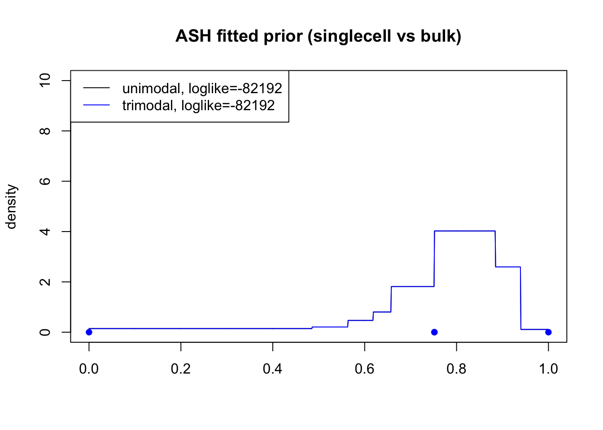
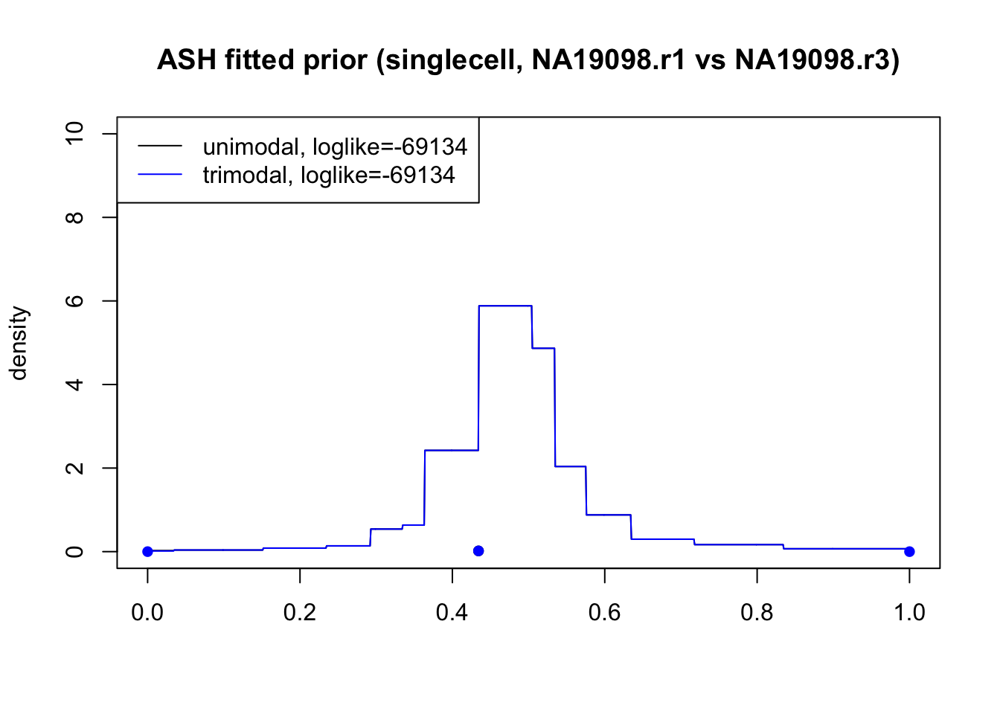
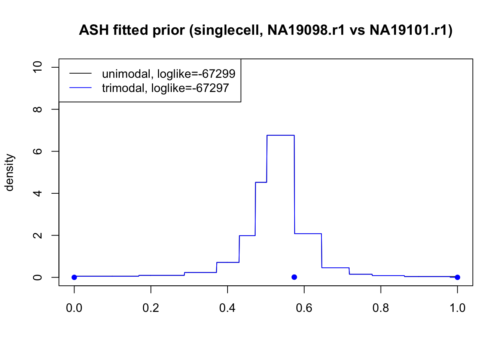

Last updated: 2017-04-20
Code version: f725a9a
Import the data before gene/sample filtering. (I copied these data files from our singleCellSeq project directory)
anno <- read.table("../data/annotation.txt", header = TRUE,stringsAsFactors = FALSE)
molecules <- read.table("../data/molecules.txt", header = TRUE,stringsAsFactors = FALSE)
reads_bulk <- read.table("../data/reads-bulk.txt", header = TRUE, stringsAsFactors = FALSE)
molecules_19101_r1 <- molecules[ ,anno$batch == "NA19101.r1"]
reads_bulk_19101_r1 <- reads_bulk[ ,grep("NA19101.r1", colnames(reads_bulk))]
# Let's compute for the single cell data, the counts of gene $g$ across all the individual cells.
counts_single <- rowSums(molecules_19101_r1)
counts_bulk <- reads_bulk_19101_r1
counts <- data.frame(counts_single, counts_bulk)
counts <- counts[which(rowSums(counts)>0),]
ngenes <- dim(counts)[1]
counts <- counts %>%
mutate(total = counts_single + counts_bulk) %>%
mutate(mn = counts_bulk/total)
head(counts) counts_single counts_bulk total mn
1 32 56 88 0.6363636
2 1 3 4 0.7500000
3 206 2675 2881 0.9284970
4 17 58 75 0.7733333
5 2 3 5 0.6000000
6 4 0 4 0.0000000Applying general ash to unfiltered data. We try both unimodal prior and trimodal prior, where the trimodal prior contains the fitted unimodal prior’s mixture components and pointmasses at 0 and 1.
library(ashr)
# fit unimodal ash
fit_unimodal <- ash.workhorse(rep(0, ngenes), 1,
lik = lik_binom(counts$counts_bulk,counts$total),
mixcompdist = "halfuniform", prior="uniform")
g_uni <- fit_unimodal$fitted_g
# fit trimodal ash
# trimodal prior's components: fitted unimodal prior's components and pointmasses at 0 & 1
# use ash to estimate the mixture proportions
g_tri <- g_uni
g_tri$a <- c(0,1,g_tri$a)
g_tri$b <- c(0,1,g_tri$b)
g_tri$pi <- rep(1/length(g_tri$a), length(g_tri$a))
fit_trimodal <- ash.workhorse(rep(0, ngenes), 1,
lik = lik_binom(counts$counts_bulk,counts$total),
g=g_tri, prior="uniform")
g_tri <- fit_trimodal$fitted_gCompare the fitted unimodal prior and trimodal prior:
x <- seq(0,1,by=0.001)
dens_uni <- dens_unimix(g_uni, x)
pointmass_uni <- data.frame(point = g_uni$a[g_uni$a==g_uni$b],
mass = g_uni$pi[g_uni$a==g_uni$b])
dens_tri <- dens_unimix(g_tri, x)
pointmass_tri <- data.frame(point = g_tri$a[g_tri$a==g_tri$b],
mass = g_tri$pi[g_tri$a==g_tri$b])
plot(x, dens_uni, type="l",ylim=c(0,10),xlab="",ylab="density",
main="ASH fitted prior (singlecell vs bulk)")
lines(x, dens_tri, col="blue")
points(pointmass_uni$point, pointmass_uni$mass,pch=16)
points(pointmass_tri$point, pointmass_tri$mass,pch=16,col="blue")
legend("topleft",col=c("black","blue"),lty=1,
legend=c(paste0("unimodal, loglike=",round(fit_unimodal$loglik)),
paste0("trimodal, loglike=",round(fit_trimodal$loglik))))
Load data:
load("../data/NA19098.sums.Rda")
counts_r1 <- NA19098.sums[,1]
counts_r3 <- NA19098.sums[,2]
counts <- data.frame(counts_r1, counts_r3)
counts <- counts[which(rowSums(counts)>0),]
ngenes <- dim(counts)[1]
counts <- counts %>%
mutate(total = counts$counts_r1 + counts$counts_r3) %>%
mutate(mn = counts$counts_r1/total)
head(counts) counts_r1 counts_r3 total mn
1 24 23 47 0.5106383
2 0 2 2 0.0000000
3 280 242 522 0.5363985
4 12 24 36 0.3333333
5 7 2 9 0.7777778
6 251 182 433 0.5796767Fit unimodal and trimodal ASH:
# fit unimodal ash
fit_unimodal <- ash.workhorse(rep(0, ngenes),1,
lik = lik_binom(counts$counts_r1,
counts$counts_r1+counts$counts_r3),
mixcompdist = "halfuniform", prior="uniform")
g_uni <- fit_unimodal$fitted_g
# fit trimodal ash
g_tri <- g_uni
g_tri$a <- c(0,1,g_tri$a)
g_tri$b <- c(0,1,g_tri$b)
g_tri$pi <- rep(1/length(g_tri$a), length(g_tri$a))
fit_trimodal <- ash.workhorse(rep(0, ngenes), 1,
lik = lik_binom(counts$counts_r1,counts$total),
g=g_tri, prior="uniform")
g_tri <- fit_trimodal$fitted_gCompare the fitted unimodal prior and trimodal prior:
x <- seq(0,1,by=0.001)
dens_uni <- dens_unimix(g_uni, x)
pointmass_uni <- data.frame(point = g_uni$a[g_uni$a==g_uni$b],
mass = g_uni$pi[g_uni$a==g_uni$b])
dens_tri <- dens_unimix(g_tri, x)
pointmass_tri <- data.frame(point = g_tri$a[g_tri$a==g_tri$b],
mass = g_tri$pi[g_tri$a==g_tri$b])
plot(x, dens_uni, type="l",ylim=c(0,10),xlab="",ylab="density",
main="ASH fitted prior (singlecell, NA19098.r1 vs NA19098.r3)")
lines(x, dens_tri, col="blue")
points(pointmass_uni$point, pointmass_uni$mass,pch=16)
points(pointmass_tri$point, pointmass_tri$mass,pch=16,col="blue")
legend("topleft",col=c("black","blue"),lty=1,
legend=c(paste0("unimodal, loglike=",round(fit_unimodal$loglik)),
paste0("trimodal, loglike=",round(fit_trimodal$loglik))))
Load data:
load("../data/Two.ind.r1.Rda")
counts_NA19098 <- Two.ind.r1[,1]
counts_NA19101 <- Two.ind.r1[,2]
counts <- data.frame(counts_NA19098, counts_NA19101)
counts <- counts[which(rowSums(counts)>0),]
ngenes <- dim(counts)[1]
counts <- counts %>%
mutate(total = counts$counts_NA19098 + counts$counts_NA19101) %>%
mutate(mn = counts$counts_NA19098/total)
head(counts) counts_NA19098 counts_NA19101 total mn
1 24 32 56 0.4285714
2 0 1 1 0.0000000
3 280 206 486 0.5761317
4 12 17 29 0.4137931
5 0 2 2 0.0000000
6 7 4 11 0.6363636Fit unimodal and trimodal ASH:
# fit unimodal ash
fit_unimodal <- ash.workhorse(rep(0, ngenes),1,
lik = lik_binom(counts$counts_NA19098,
counts$counts_NA19098+counts$counts_NA19101),
mixcompdist = "halfuniform", prior="uniform")
g_uni <- fit_unimodal$fitted_g
# fit trimodal ash
g_tri <- g_uni
g_tri$a <- c(0,1,g_tri$a)
g_tri$b <- c(0,1,g_tri$b)
g_tri$pi <- rep(1/length(g_tri$a), length(g_tri$a))
fit_trimodal <- ash.workhorse(rep(0, ngenes), 1,
lik = lik_binom(counts$counts_NA19098,counts$total),
g=g_tri, prior="uniform")
g_tri <- fit_trimodal$fitted_gCompare the fitted unimodal prior and trimodal prior:
x = seq(0,1,by=0.001)
dens_uni = dens_unimix(g_uni, x)
pointmass_uni = data.frame(point = g_uni$a[g_uni$a==g_uni$b],
mass = g_uni$pi[g_uni$a==g_uni$b])
dens_tri = dens_unimix(g_tri, x)
pointmass_tri = data.frame(point = g_tri$a[g_tri$a==g_tri$b],
mass = g_tri$pi[g_tri$a==g_tri$b])
plot(x, dens_uni, type="l",ylim=c(0,10),xlab="",ylab="density",
main="ASH fitted prior (singlecell, NA19098.r1 vs NA19101.r1)")
lines(x, dens_tri, col="blue")
points(pointmass_uni$point, pointmass_uni$mass,pch=16)
points(pointmass_tri$point, pointmass_tri$mass,pch=16,col="blue")
legend("topleft",col=c("black","blue"),lty=1,
legend=c(paste0("unimodal, loglike=",round(fit_unimodal$loglik)),
paste0("trimodal, loglike=",round(fit_trimodal$loglik))))
sessionInfo()R version 3.3.0 (2016-05-03)
Platform: x86_64-apple-darwin13.4.0 (64-bit)
Running under: OS X 10.10.5 (Yosemite)
locale:
[1] en_US.UTF-8/en_US.UTF-8/en_US.UTF-8/C/en_US.UTF-8/en_US.UTF-8
attached base packages:
[1] stats graphics grDevices utils datasets methods base
other attached packages:
[1] ashr_2.1-10 ggplot2_2.2.1 dplyr_0.5.0 tidyr_0.6.0
[5] workflowr_0.4.0 rmarkdown_1.4 devtools_1.12.0
loaded via a namespace (and not attached):
[1] Rcpp_0.12.9 git2r_0.18.0 plyr_1.8.4
[4] iterators_1.0.8 tools_3.3.0 digest_0.6.12
[7] lattice_0.20-34 evaluate_0.10 memoise_1.0.0
[10] tibble_1.2 gtable_0.2.0 Matrix_1.2-7.1
[13] foreach_1.4.3 DBI_0.5-1 rstudioapi_0.6
[16] curl_2.2 yaml_2.1.14 parallel_3.3.0
[19] withr_1.0.2 httr_1.2.1 stringr_1.2.0
[22] knitr_1.15.1 REBayes_0.68 rprojroot_1.2
[25] grid_3.3.0 R6_2.2.0 magrittr_1.5
[28] whisker_0.3-2 MASS_7.3-45 backports_1.0.5
[31] scales_0.4.1 codetools_0.2-15 htmltools_0.3.5
[34] assertthat_0.1 colorspace_1.2-7 labeling_0.3
[37] stringi_1.1.2 Rmosek_7.1.2 pscl_1.4.9
[40] lazyeval_0.2.0 munsell_0.4.3 doParallel_1.0.10
[43] truncnorm_1.0-7 SQUAREM_2016.8-2 This R Markdown site was created with workflowr